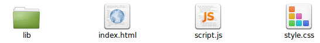
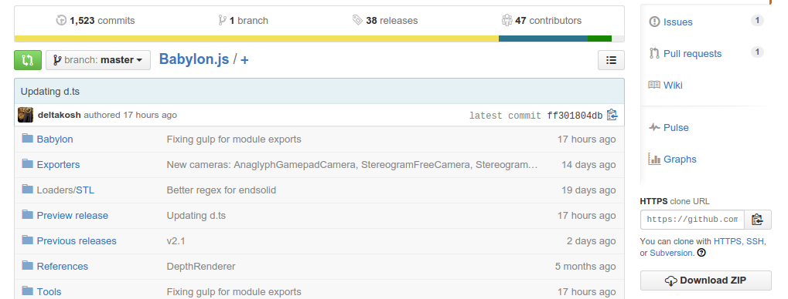

BabylonJS (http://www.babylonjs.com//) est un moteur 3D (recherchez ce qu'est un moteur 3D) basé sur WebGL. Il permet de construire et d'animer des scènes en 3D directement dans un navigateur web.
BabylonJS n'est pas un logiciel, c'est une bibliothèque JavaScript. Vous allez devoir écrire du code dans un éditeur de texte.
Comme indiqué plus haut, BabylonJS va vous permettre d'afficher des scènes en 3D dans un navigateur web, qui dit navigateur web, dit 3 éléments :
Le HTML sera très simple puisqu'il se résumera à une balise <canvas> (balise qui va permettre d'afficher le contenu 3D dans le navigateur). Le code CSS sera aussi très simple (et même non nécessaire !). Tout se jouera donc au niveau du JavaScript.
Dans votre espace de travail, créez un dossier nommé "app_00". Placez-vous dans ce dossier "app_00" et créez un répertoire dénommé "lib".
Créez à l'aide d'un éditeur de texte (par exemple Scite si vous êtes sous GNU/Linux) les 3 fichiers suivants (et les placer dans le répertoire "app_00") : index.html, style.css, script.js
index.html
<!doctype html>
<html lang="fr">
<head>
<meta charset="utf-8">
<title>Activités BabylonJS</title>
<link rel="stylesheet" href="style.css">
<script src="lib/babylon.2.1.js"></script>
</head>
<body>
<canvas id="renderCanvas"></canvas>
</body>
<script src="script.js"></script>
</html>
style.css
html, body, canvas {
width: 100%;
height: 100%;
padding: 0;
margin: 0;
overflow: hidden;
}
script.js
// Ce fichier est pour l'instant vide
Voici ce que vous devriez obtenir :
Rien de spécial dans le code du fichier index.html, nous utilisons une feuille de style et nous "chargeons" la bibliothèque BabylonJS
<script src="lib/babylon.2.1.js"></script>
Mais avant de pouvoir utiliser cette bibliothèque, il faut la télécharger.
Sur le site https://github.com/BabylonJS/Babylon.js, cliquez sur Download ZIP
Une archive zip d'une centaine de mega-octet devrait se télécharger.
"Dézipper" cette archive "Babylon.js-master.zip" et placez le dossier obtenu dans votre répertoire de travail.
Placez-vous dans ce dossier (qui devrait avoir pour nom "Babylon.js-master").
Copier-coller le fichier "babylon.2.1.js" dans le dossier "lib" qui a été défini dans l'activité 1.
ATTENTION : au moment de la rédaction de ces actvités, la librairie est en version 2.1 (babylon.2.1.js), il est fort probable qu'au moment de votre lecture, la version ne soit plus même. Veillez à adapter le code HTML en conséquence : "<script src="lib/babylon.X.X.js"></script> " les X sont à remplacer par le bon numéro de version
Tout est prêt !
Dans les activités suivantes, pour créer une nouvelle application, il vous suffira d'effectuer un copier-coller du dossier "app_00" et de renommer le dossier résultant de ce copier-coller en "app_01", "app_02", "app_03", ...
Pour tester vos programmes, il suffira de double-cliquer sur le fichier "index.html"